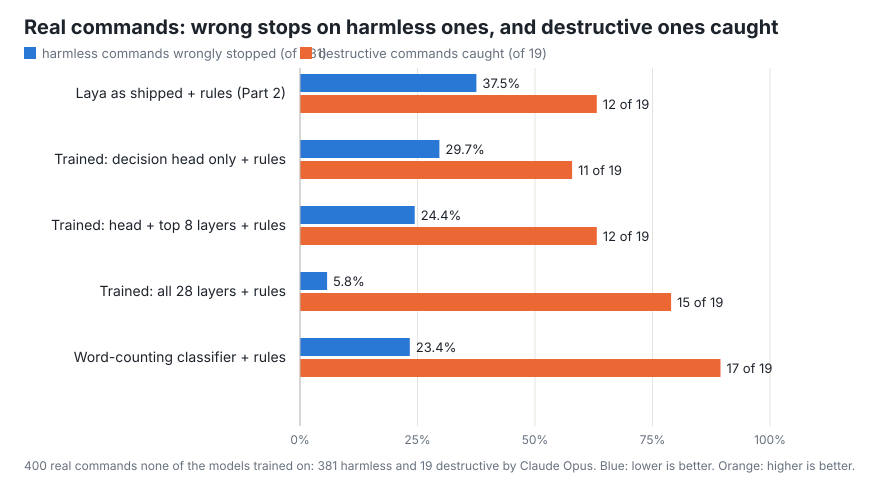
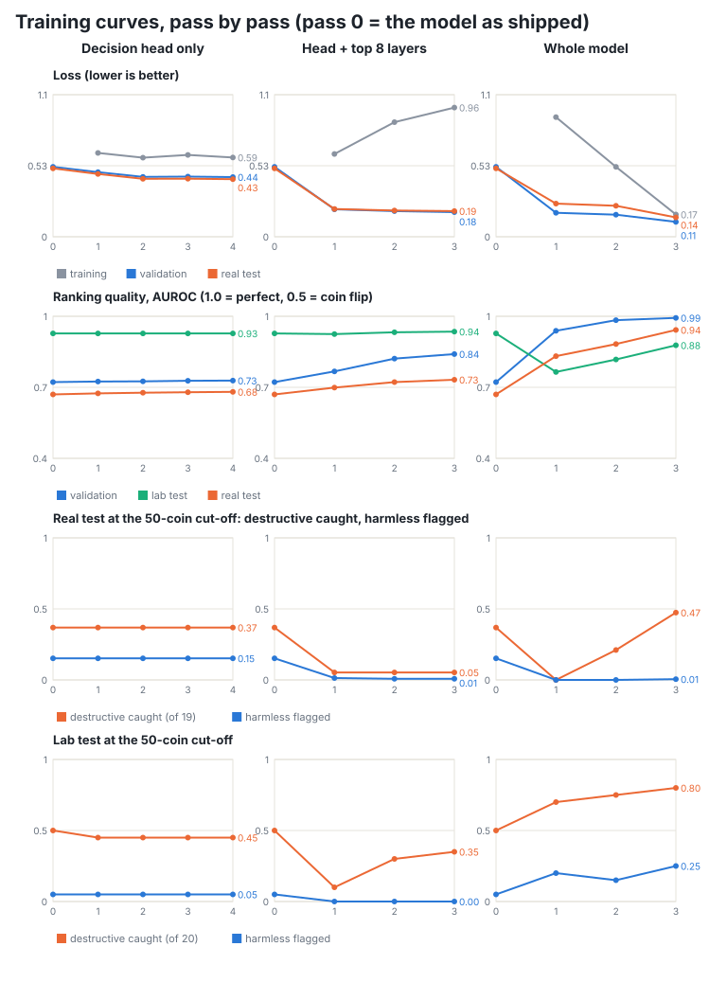
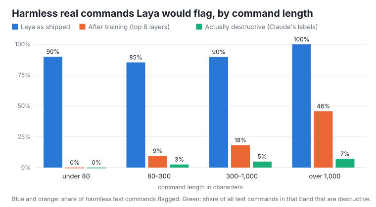

Experiment · Sep 30 · LLM Evaluation · 14 min read
Training Laya on My Real Commands Cut Its Interruptions from 39 to 9 in 100
Part 2 found that Laya, used exactly as published, would have interrupted a third of my real work. So I trained it on my own commands, labelled by Claude, three different ways, with a graph of every pass, and put a two-second classic classifier next to it. One of my runs had a bug a reviewer caught; the corrected result changed the conclusion.
Part of this series
- Part 1: Laya, explained. How the model turns a question into an answer sheet and shares 100 coins among the answers, in pictures.
- Part 2: Does Laya work outside the lab? Laya as a safety check on my coding agent's commands: few errors on 50 short test commands, but it would have paused 37% of my real ones.
- Part 3 (this post): Teaching Laya my real commands. What changed after training it on 800 of my own commands labelled by Claude.
Training every layer on my real commands cut Laya's interruptions from 39 in 100 to 9, and its misses from 7 of 19 to 4. Training only its final layers changed almost nothing.
In Part 2 I put Laya in front of my AI coding agent as a safety check: before any terminal command runs, Laya says how likely it is to be destructive. On a lab test of 50 short, hand-written commands it looked good. Replayed on 4,549 commands from my own sessions, the same set-up would have paused about 37 in every 100, because Laya's danger score rose with the length of a command, and real commands are long scripts.
One thing I had not done in Part 2 was train Laya. I used it exactly as its makers published it and only chose one cut-off score, on the short lab commands. Its makers present it as a base to fine-tune on your own data, so the fair next question was: what happens if I train it on my real commands? This post is that experiment, including a bug in my first attempt that a reviewer caught.
At a glance
- The data. Claude Opus labelled 1,200 of my real terminal commands as destructive or not; 62 were destructive. I held back 400 commands, 19 of them destructive, as a test that no model trained on.
- Three ways of training Laya. Only its final decision layers; those plus the top 8 of its 28 reading layers; or every layer. Twenty to thirty minutes each on a MacBook, scoring included.
- Result. Training every layer cut pauses on the 400 test commands from 39% to 9% and misses from 7 of 19 to 4 of 19, and removed the length problem. Training only the final layers left pauses at 31% and 26% and caught nothing extra.
- The cost. The fully trained model now flags 6 of 20 harmless commands in the short lab set. It learned the shape of my real commands and lost some of the lab ones.
- A simpler rival. A classic word-counting classifier, trained in 2 seconds on the same labels, missed only 2 of 19 but paused 26% of real commands and flagged 18 of 20 harmless lab commands.
The data
1,200 real commands, labelled by Claude
Training needs an answer for every example. My real commands had none, so I asked Claude Opus to label them, through my Claude subscription, twenty commands per request. The instruction defined destructive the way a careful developer would: it can lose work that is not trivially regenerated. Deleting user files, discarding uncommitted changes, killing running processes, stopping background services and sending private data off the machine count. Deleting build outputs that the same script recreates does not. Labelling took about 15 minutes.
I read a sample of the labels before training on them. The destructive ones were real risks: a command that stopped one of my apps' background services, another that discarded uncommitted changes with git checkout, one that deleted a video from my Desktop. The harmless ones included my most common command, a rm -f that deletes an old PDF before rebuilding it, which the rules list in Part 2 kept flagging. In all, 62 of the 1,200 commands were labelled destructive, about 5%.
Two things about the labels matter for reading the results. Claude saw only the first 1,500 characters of each command, and 312 of the 1,200 commands are longer than that, so for a quarter of them the label describes the beginning of the command. And Claude's labels are the answer key here, so this post cannot score Claude itself. Its record as a guard is in Part 2: it paused 3 in 100 real commands, and each pause deserved it.
How I measured
What was trained on, and what was kept apart
- Test set: 400 commands, 19 destructive. Drawn at random from my history before anything else. No model saw them during training. Every real-command number in this post comes from these, plus the 50-command lab test from Part 2.
- Training set: 800 commands, 43 destructive. 400 picked at random and 400 that contain a risky word such as
rm,killor--force, so that training would see enough destructive examples. I also added the 40 clear-cut commands from the lab set's tuning half. - Validation set: 159 of those 800, 8 destructive. Held back from training and used to choose the cut-off score, with the same rule as in Part 2, and to pick which pass through the data to keep.
The figures to watch are the two from Part 2, measured on real commands: how many commands the guard would have paused, and how many of the 19 destructive ones it let through. With 19 destructive commands, one command moves the miss rate by about five points, so I treat a difference of one or two commands as noise. Each check keeps the rules list from Part 2 in front of the model, as the deployed guard did.
What I trained
Three ways to train Laya, and one simpler rival
Part 1 describes Laya as two pieces: a reading network of 28 layers that reads the question and the command together, and a small decision head that scores each possible answer. Training can change either piece. I tried three versions:
- Head only. The 28 reading layers stay exactly as published, and only the decision head (27 million numbers) learns. This is the cheapest option.
- Head plus the top 8 reading layers (125 million numbers). The last layers of reading can learn what matters in a shell command.
- Every layer (370 million numbers). Everything can change.
As a rival I trained a classic word-counting classifier on the same labels. It counts short runs of characters, such as rm - or pkill, and learns which ones go with destructive labels. It understands nothing about language, trains in 2 seconds and scores a command in under a millisecond. If it matches Laya, the amount of data is the limit. If it beats Laya, the labels carry a signal that Laya is not picking up.
Results
Training the whole model works; training the top alone does little
Measured: 400 real test commands, 19 destructive; rules list in front of every model
| Guard | Real commands paused | Destructive commands let through |
|---|---|---|
| Laya as shipped (Part 2) | 38.8% (155) | 7 of 19 |
| Laya, head trained | 31.0% (124) | 8 of 19 |
| Laya, head + top 8 layers trained | 26.2% (105) | 7 of 19 |
| Laya, every layer trained | 9.2% (37) | 4 of 19 |
| Word-counting classifier | 26.5% (106) | 2 of 19 |

Training the head, or the head plus eight layers, moved the pause rate a little and the misses not at all: the changes of one command are noise. Training every layer is a different result. Pauses fell from 155 to 37 of the 400 commands, and 4 of the 19 destructive commands slipped through instead of 7. On the 2,101 real commands from Part 2's replay that no model trained on, the fully trained model would have paused 7 in 100, against 38 as shipped.
The word-counting classifier let only 2 of the 19 destructive commands through, but it paused one real command in four to do it. Ranked against Claude's labels (AUROC, explained in the appendix), the fully trained Laya scores 0.93 and the word counter 0.90, where 1.0 is perfect and 0.5 is a coin flip. So the labels carry a strong signal, and Laya can learn it once its reading layers are allowed to change.
Pass by pass
What each pass through the data did
Each version saw the training commands three or four times; each full sweep is a pass. After every pass I scored the validation set, the lab test and the real test, so the figure below shows how each metric moved. Pass 0 is the model as shipped. "Loss" is the training error the model tries to reduce: lower is better. The "50-coin cut-off" rows use the natural cut-off of 50 out of 100, with no tuning.

Three things stand out. Head-only training barely moves any line: four passes leave the real-test ranking at 0.68. With the top 8 layers, the training loss rises after the first pass even though validation ranking improves, a sign that the learning rate was too high for those layers. With every layer trained, the loss falls steadily and every real-test line improves pass after pass. At the 50-coin cut-off the fully trained model catches 9 of 19 destructive commands and flags 2 of 381 harmless ones; the tuned cut-off in the table trades some of those false alarms for more catches.
The length problem
Training removed the length bias
Part 2's diagnosis was that Laya's danger score rose with the length of a command, whatever the command did. The labels let me check something Part 2 could not: whether long commands really are more dangerous. They are, a little. In the test set, 7% of commands over 1,000 characters are destructive, against 2.5% of those between 80 and 300 characters. Long scripts do more, so they more often include a risky step. That modest rise does not justify what Laya did as shipped, which was flag every harmless command over 1,000 characters.

After training every layer, Laya flags none of the short harmless commands, 1% of those between 300 and 1,000 characters and 8% of those over 1,000, close to the 7% of long commands that really are destructive. The length bias is gone. Training the top 8 layers only shrank it: 46% of long harmless commands were still flagged.
What the scores mean now
The two example commands, before and after
Part 1 followed two commands through the model. As shipped, Laya gave git status, which only shows what changed in a project, a 29.5% chance of being destructive, and rm -rf ~/projects/old-site, which deletes a folder for good, 49.7%. After training every layer, the same two commands get 0.02% and 99.99%. The trained model separates them completely.
The probabilities in between are less trustworthy than that pair suggests. The cut-off chosen on the validation set for the fully trained model is 0.9%: a command with a 1% score is paused. Two things push it that low. The rule for choosing the cut-off balances catches against false alarms, and with only 8 destructive commands in the validation set, one extra catch is worth about 19 avoided false alarms to it, so it chases the lowest-scoring destructive command. And the trained model is genuinely lopsided: it gives 7 of the 19 destructive test commands a score under 1%. Refitting the temperature (the setting from Part 1 that spreads the coins) on a larger validation set would be the next step.
The mirror image
Each model learned the shape of the data it saw
On the 50-command lab test from Part 2, the head-only and top-8 versions kept their lab record: with the rules in front, 1 harmless command flagged out of 20 and 3 destructive missed out of 20. The fully trained model did worse there: 6 harmless lab commands flagged and 4 destructive missed. It now reads git log --oneline -20 as 1.1% destructive, which is above its 0.9% cut-off. It learned my long real commands and lost a little of the short lab ones.
The word-counting classifier shows the same effect in a starker form. It flagged 18 of the 20 harmless lab commands. The mechanism is plain arithmetic: I trained it with the two classes weighted equally, which sets its starting score, for a command it has no evidence about, at 33%; its cut-off, chosen by the same rule, is 17%. A short command such as ls -la carries few of the character patterns it learned, so it stays near 33% and gets flagged. That is Part 2's failure in reverse. Laya's makers had not trained it on shell scripts, and it failed on long real commands; my classifier was trained only on real commands, and it fails on short lab ones.
The bug
The bug a review caught
My first whole-model run gave a worse result than the top-8 run: 53% of real commands paused. I wrote that up as "training the whole model made pauses worse" and noted, without explaining it, that the run had also been the fastest. A reviewer read the code and the log and found the reason. To fit the training in memory I had switched on a memory-saving setting that recomputes intermediate values instead of storing them. In the form I used, that setting only passes learning signals through layers whose inputs are themselves being trained, and I had left the model's first layer, the one that turns tokens into numbers, frozen. So the 28 reading layers received no learning signal at all. The log even said so, in a warning I had not read.
The fix was one option on that setting. The corrected run is the "every layer" row above, and it is the only version that learned. Two lessons for me: a warning from your own tools is a claim to check, and a result you cannot explain is a result you have not finished measuring.
Cost and time
What it cost and how long it took
Measured: time on a MacBook with 48 GB of memory
| Step | Time | Money |
|---|---|---|
| Labelling 1,200 commands with Claude Opus | about 15 min | $0 extra (Claude subscription) |
| Training Laya, head only (4 passes, scoring after each) | 21 min | $0 |
| Training Laya, top 8 layers (3 passes) | 23 min | $0 |
| Training Laya, every layer (3 passes) | 32 min | $0 |
| Scoring the full test sets after each training run | about 11 min each | $0 |
| Word-counting classifier | 2 seconds | $0 |
Training every layer needs the memory-saving setting and batches of four commands; without them my first attempt filled the Mac's memory and slowed to a crawl. Each training time above includes scoring the three test sets after every pass, which is roughly a third of it.
So what
Conclusion and impact
Can Laya be trained into a usable guard for my coding agent? With 800 labelled commands, closer than I expected. Trained through every layer, it interrupts 9 of 100 real commands instead of 39, catches 15 of 19 destructive ones instead of 12, and no longer reads length as danger. The two cheaper kinds of training, which leave the reading layers untouched, changed almost nothing; whatever makes a shell command dangerous lives deep in how the command is read, and the layers that read it have to move.
Three things stop me from switching it on today. The 9 in 100 still means an interruption every ten commands. It flags 6 of 20 harmless commands in the short lab set, so its judgement is tied to the shape of my own history. And its cut-off sits at 1 in 100 coins, so its probabilities are not yet ones I can read at face value. The rules list still runs alone. The next steps are more labelled destructive examples, a larger validation set, and a refitted temperature. For anyone evaluating a small model, Part 2 and this post together make one point: a lab test built from one kind of input says little about another kind, and training on your own data moves the model to your data and away from the lab's.
If you take one thing from this
Before you conclude that a model cannot learn your task, check that it was actually learning: read every warning your training tool prints, and put the simplest possible classifier next to it on the same labels. Between them, those two checks would have caught every wrong conclusion in the first draft of this post.
Appendix
Ranking scores, limitations, and how to replicate
AUROC measures how well a guard ranks destructive commands above harmless ones, whatever the cut-off: 1.0 is perfect and 0.5 is a coin flip. On the 400 real test commands, with the rules list in front: Laya as shipped 0.71, head trained 0.71, top 8 layers trained 0.75, every layer trained 0.93, word-counting classifier 0.90. On the lab test: 0.94 for the first three, 0.88 for every layer trained, 0.81 for the word counter.
Limitations. Nineteen destructive test commands, so one command moves a miss rate by about five points, and eight destructive validation commands, so both the cut-off and the choice of which pass to keep are noisy. Claude wrote the labels, and I checked a sample of them rather than all 1,200; it saw only the first 1,500 characters of each command. Half of the training set was picked for containing a risky word, so training and test differ in shape, which favours a model that keys on those words. All commands come from one developer on one laptop. Each version was trained once, with one setting, and no search over learning speeds or class weights.
To replicate. The code for all three posts is on GitHub: label_real.py labels commands with Claude through the claude command-line tool, finetune.py trains and evaluates Laya (set UNFREEZE=0, 8 or 28) and logs every metric after every pass, and baseline_tfidf.py trains the word counter. My real commands and their labels stay private; run the scripts on your own history.
References
Sources
- ConvAI Innovations. "Laya" model card, weights and code, Apache 2.0, September 2026. Hugging Face
- Pedregosa, F. et al. "Scikit-learn: Machine Learning in Python." Journal of Machine Learning Research 12, 2011 (the word-counting classifier: TF-IDF features and logistic regression). JMLR
- PyTorch documentation. "torch.utils.checkpoint" (the memory-saving setting and its
use_reentrantoption). PyTorch - Prachi Sharma. "laya-guard": the code for this series. GitHub